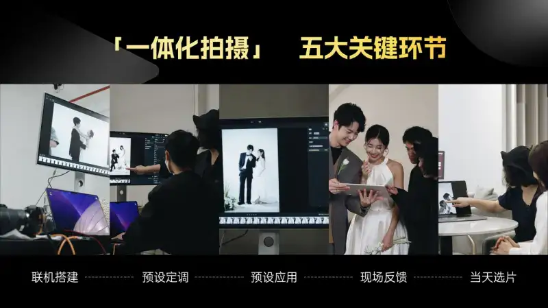
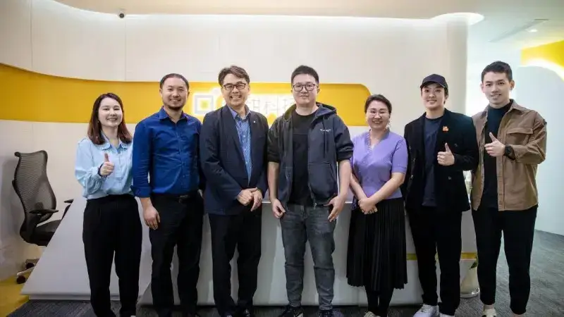
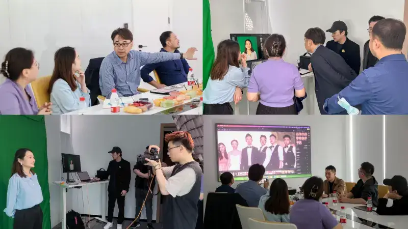
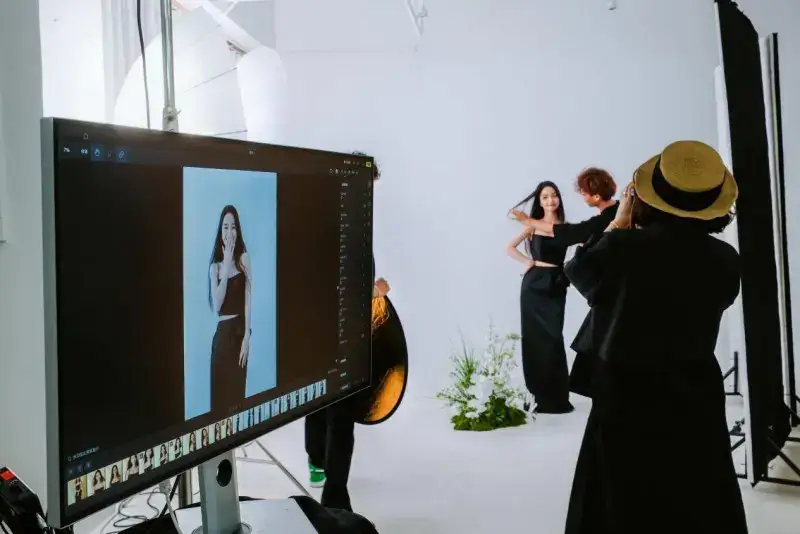

Published: 2024-05-16
Original link: https://www.cnphotos.net/academy/show-173.html
Growth for commercial photo studios has become a race.
Data from Qichacha shows that, by December 2023, the number of photography service businesses in China passed 2.98 million, growing more than 15% a year. Of these, 79.1% are small businesses with registered capital under two million yuan.
Competition in the market keeps growing, and the production and operations inside each studio face new challenges. Every photographer today must meet two goals: answer the rising taste of a new generation of consumers, and cut delivery time, raise delivery quality, and drive marketing growth.
Pixel Cake and Canon are leaders in post-processing services and camera equipment. Drawing on their industry-leading technology and deep market research, they have launched an "Integrated Shooting" solution for commercial photography. The first pilot studios saw a near 100% rise in positive client reviews and a 30% rise in secondary sales.
In this solution, Pixel Cake uses its own "AI Raw engine." It is the only post-processing software in China that can fully read Raw files. It has deep cooperation with Canon on product compatibility and color management. It brings studios a high-quality growth plan and starts a new wave of change in the industry.
01
Deep link between software and hardware, a very short production chain
In a traditional commercial shoot, from the start of the shoot to the first look at the final images, the work goes through file conversion, color grading, basic retouching, photo selection, and fine retouching. The people in charge and the editing standards differ at each step. This makes the front-end service long, the quality uneven, and it can hurt secondary sales and the studio's reputation.
The Integrated Shooting solution links the camera to Pixel Cake's AI retouching during the shoot. It cuts the whole shoot service to one day and gives clients the experience of shooting, retouching, and selecting on the spot. This model helps studios connect five key steps and shorten the production cycle. It also aligns the delivery standard with the client's on-site sample, so both quality and efficiency of the shoot service improve.

Linked setup
Depending on the setting, choose the desktop or iPad version of Pixel Cake. With one cable, it links to the camera automatically, so the photographer can preview high-definition images in real time during the shoot.
Setting the look in advance
Before the real shoot, the photographer takes sample shots of the client. Based on the setting, the light, and the person, they set the best color and portrait parameters and save them as a look preset.
Applying the preset
Once shooting starts, the preset applies automatically to each new photo. The retouching preview shows in real time, so the photographer's creative intent is truly captured.
On-site adjustment
During the shoot, the client can view the photos and give feedback. This helps the photographer refine the work and the retouching, and it greatly improves the client's sense of involvement.
Selecting photos the same day
After the shoot, the photographer invites the client to select photos right away. This catches the excitement window. It shortens the selection process and drives secondary sales at the front desk.
02
Proprietary technology well applied, a strong pairing that lifts both sides
As leading brands in retouching and camera gear, Pixel Cake and Canon have released the Integrated Shooting solution together. It is an industrial-level pairing between the two in product and technology.
On one hand, through ongoing development, Pixel Cake has linked with nearly the full range of Canon cameras, giving photographers smooth, top-tier shooting. To test the link, Hideyuki Matsumoto, Senior General Manager of Canon China, led a team to Pixel Cake's company to experience the Integrated Shooting solution firsthand. He highly praised its performance and stable compatibility.

Hideyuki Matsumoto (third from left), Senior General Manager of Canon China, visits Pixel Cake
On the other hand, Canon cameras are known in the industry for their soft, detailed images and strong color features. With its self-developed AI Raw engine, Pixel Cake fully reads Raw files and has made two breakthroughs in image professionalism:
1. Fully restoring the camera's color tuning
Pixel Cake's built-in AI engine deeply reads Raw files and restores the original color tuning of Canon cameras. This means the colors the user saw during the shoot are kept to the greatest extent in post-processing. In portrait work, the AI Raw engine optimizes portrait files, restores Canon's natural skin tone tuning, and keeps the fine glow and texture of the skin, for a more professional portrait.
2. Keeping more color range and detail from the original file
Raw files hold a wider color range and richer detail, which gives more room in post. Pixel Cake's AI Raw engine makes the most of Raw and keeps more color range and detail, such as strands of hair, skin texture, and fabric texture, for a livelier, finer image. The engine also includes a set of professional Raw color management tools. These give photographers more freedom to adjust color boldly and build their own artistic style.

The Canon China team experiences the Integrated Shooting solution in depth
Drawing on both brands' deep strength in commercial photography, this partnership will bring the industry a new, intelligent way to work together and give users a better imaging service.
03
Rooted in real use, with strong potential to lift business efficiency
Pixel Cake keeps creating with people in the industry, using their needs to drive its development. The launch of Integrated Shooting also benefited from the full involvement of many strong studios.
Aicheng Weiting is a well-known wedding photography brand in China and a sample-photo supplier to hundreds of studios. As one of the first studios to use Integrated Shooting in real work, Yingzi, co-founder of Aicheng Weiting, says the brand has always looked for ways to improve its workflow and client satisfaction. After adopting Integrated Shooting, Aicheng rebuilt and tested the shoot steps for some of its work. It cut the former 3-to-5-day selection period to half a day, and in the very same month raised the number of extra secondary-sale photos by 30%.

Yingzi, co-founder of Aicheng Weiting, uses the Integrated Shooting solution
Compared with the traditional workflow, Integrated Shooting connects front-end shooting and back-end retouching in one model. The speed of linked shooting, combined with professional portrait handling, sharply raises client satisfaction with the look and the delivery speed. It further lifts the studio's reputation and brand.
"To help more strong commercial photographers grow" has always been Pixel Cake's goal. An efficiency tool exists to serve people, so 100% of Pixel Cake's features come from real user feedback. It creates deeply with users, and needs and technology strengthen each other. This built Pixel Cake's reputation in commercial photography. Going forward, Pixel Cake will work with more partners in the industry, explore the potential for efficiency gains, and develop more tools that empower photographers.